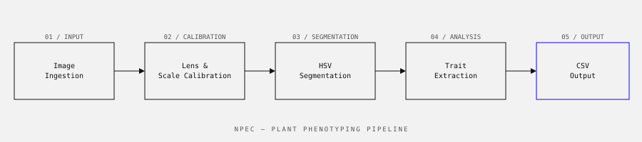

NPEC · 2023
A computer vision pipeline that automatically extracts plant growth traits from high-throughput imagery — replacing hours of manual measurement with a batch process that runs overnight.

NPEC (Netherlands Plant Eco-phenotyping Centre) runs high-throughput plant imaging experiments — hundreds of plants photographed from multiple angles at regular intervals over the course of weeks. Researchers needed to extract quantitative traits from this imagery: plant height, leaf area, rosette diameter, colour indices.
The existing process was partly manual. Researchers would sample a subset of images, take measurements by hand, and extrapolate. This introduced human variability and meant only a fraction of the available data was actually analysed.
Plants are awkward computer vision subjects. They're non-rigid, their appearance changes significantly over the growth period, and the imaging setup (overhead + side cameras, controlled lighting) introduces its own artefacts. The pipeline needed to handle the full range of plant sizes and shapes across an experiment without manual tuning between batches.
A four-stage batch pipeline:
Processing time for a full experiment batch (≈ 2,400 images) dropped from several days of manual work to an overnight automated run. Trait extraction error versus manual ground truth measurements was within 3–5% for leaf area and height — within the acceptable range for the downstream statistical analyses.
Calibration is everything in quantitative imaging. Early versions of the pipeline produced measurements that looked plausible but drifted by 8–12% from ground truth because of inconsistent scale correction between camera positions. Fixing the calibration step — boring, methodical work — had more impact on accuracy than any improvement to the segmentation algorithm.
This project introduced me to the robotics and automation side of data science. The imaging system itself is a conveyor-based robot; the pipeline slots into a larger automated infrastructure. That context changed how I thought about edge cases — the pipeline needs to handle a plant that fell over, a tray that arrived empty, a camera that captured partial occlusion.